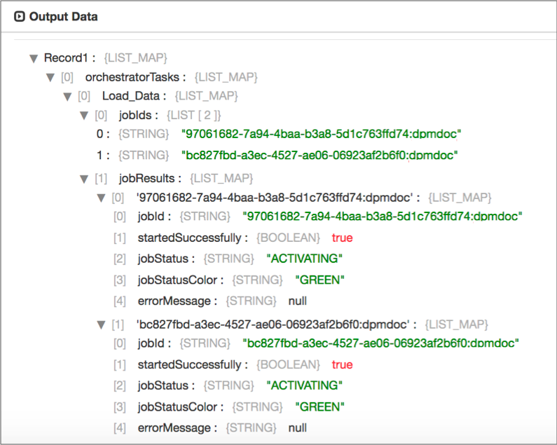

Start Jobs
Supported pipeline types:
|
The Start Jobs origin is an orchestration stage that you use in orchestration pipelines. Orchestration stages perform tasks, such as schedule and start pipelines and Control Hub jobs, that you can use to create an orchestrated workflow across the StreamSets platform.
The Start Jobs origin can start jobs that run on any StreamSets execution engine, including Data Collector, Data Collector Edge, and Transformer. The origin generates an orchestration record that contains the list of started jobs and additional details about those jobs. You can pass the record to an orchestration stage to trigger another task. Or, you can pass it to a non-orchestration stage to perform other processing. For example, you might use a scripting processor to add information to the orchestration record.
When you configure the Start Jobs origin, you specify the Control Hub URL, and the names or IDs of the jobs or job template to start. You can also specify runtime parameters for each job or job instance.
You can configure the origin to reset the origins in the jobs when possible, and to run the jobs in the background. When running jobs in the background, the origin immediately passes its generated record downstream instead of waiting for the jobs to finish.
You also configure the user name and password to run the job and can optionally configure SSL/TLS properties.
Job Execution and Data Flow
- Run jobs in the foreground
- By default, the origin starts jobs that run in the foreground. When the jobs run in the foreground, the origin passes the orchestration record downstream after all the started jobs complete.
- Run jobs in the background
- You can configure the origin to start jobs that run in the background. When jobs run in the background, the origin passes the orchestration record downstream immediately after starting the jobs.
Generated Record
The Start Jobs origin creates an orchestration record that includes information about the jobs that it starts.
| Field Name | Description |
|---|---|
| orchestratorTasks | List Map field that contains task details for the orchestration pipeline.
Most orchestration stages add details about their completed tasks within this field. |
| <unique task name> | List Map field within the orchestratorTasks field that
contains the following fields:
|
| <job ID> | List Map field within the jobResults field that provides
details about each job. Contains the following fields:
|
For example, the following preview shows information provided by a Start Jobs origin with
the Load_Data task name. The origin runs two jobs in the background:

Note that the job status and colors indicate that the jobs are running at the time that
the origin creates the record. There is no success field because the
jobs have not yet completed.
For an example of a full orchestration record, see Example.
Runtime Parameters
When you configure the Start Jobs origin to start job instances from templates, you must specify the runtime parameters for each job instance that you want the origin to start. You can also specify runtime parameters when you configure the origin to start jobs.
You can use functions from the StreamSets expression language to define parameter values.
When you configure runtime parameters in the Start Jobs origin, you must enter the runtime parameters as a JSON object, specifying the parameter names and values as key-value pairs. The parameter names must match runtime parameters defined for the pipeline that the job runs.
The format that you use differs depending on whether you are specifying parameters for a job or job instance:
- Format for jobs
- When configuring runtime parameters for a job, you specify one JSON object with all of the parameters that you want to define.
- Format for job instances
- When configuring runtime parameters for a job template, you specify one JSON object for each job instance that you want the origin to run.
[
{
"FileDir": "/server1/logs",
"ErrorDir": "/server1/errors"
}
{
"FileDir": "/server2/logs",
"ErrorDir": "/server2/errors"
}
]Suffix for Job Instance Names
For job instances created or started from a job template, Control Hub appends a suffix to uniquely name each job instance.
The suffix is added to the job template name after a hyphen, as follows:
<job template name> - <suffix>- Counter
- Control Hub appends a number to the job template name. For example, job instances
created from the Web Log Collection Job are named as follows:
Web Log Collection Job - 1Web Log Collection Job - 2
- Timestamp
- Control Hub appends a timestamp indicating when the job instance is started to the
job template name. For example, job instances created from the Web Log
Collection Job are named as follows:
Web Log Collection Job - 2018-10-22Web Log Collection Job - 2018-10-23
- Parameter Value
- Control Hub appends the value of the specified parameter. For example, job instances
created from the Web Log Collection Job are named as follows:
Web Log Collection Job - /server1/logsWeb Log Collection Job - /server2/logs
Configuring a Start Jobs Origin
Configure a Start Jobs origin to start Control Hub jobs when the pipeline starts. The Start Jobs origin is an orchestration stage that you use in orchestration pipelines.